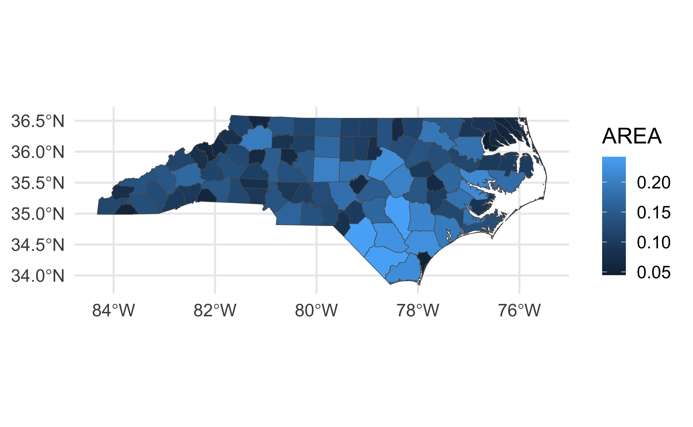

# load packages
library(countdown)
library(tidyverse)
library(geodata)
library(ggrepel)
library(ggspatial)
library(patchwork)
library(rnaturalearth)
library(rnaturalearthdata)
library(sf)
# set theme for ggplot2
ggplot2::theme_set(ggplot2::theme_minimal(base_size = 16))
# set figure parameters for knitr
knitr::opts_chunk$set(
fig.width = 7, # 7" width
fig.asp = 0.618, # the golden ratio
fig.retina = 3, # dpi multiplier for displaying HTML output on retina
fig.align = "center", # center align figures
dpi = 300 # higher dpi, sharper image
)Visualizing geospatial data II
Lecture 14
Dr. Mine Çetinkaya-Rundel
Duke University
STA 313 - Spring 2024
Warm up
Announcements
- Project proposal work + HW 4 in lab tomorrow
- Ideas for “Visualizing …” for later in the semester?
Setup
Project 2
Project 2 - potential directions
Present and visualize a technical topic in statistics or mathematics, e.g., Gradient descent, quadrature, autoregressive (AR) models, etc.
Build a Shiny app that that has an Instagram-like user interface for applying filters, except not filters but themes for ggplots.
Create an R package that provides functionality for a set of ggplot2 themes and/or color palettes.
Build a generative art system.
Do a deep dive into accessibility for data visualization and build a lesson plan for creating accessible visualizations with ggplot2, R Markdown, and generally within the R ecosystem.
Create an interactive and/or animated spatio-temporal visualization on a topic of interest to you, e.g., redistricting, COVID-19, voter suppression, etc.
Recreate art pieces with ggplot2.
Make a data visualization telling a story and convert it to an illustration, presenting both the computational and artistic piece side by side.
Build a dashboard.
Or… Visualize a (non-TidyTuesday) dataset, answering a research question of interest to you.
Project 2 - all the details
https://vizdata.org/project/project-2.html
Tip
Brainstorm a bunch of ideas and discard them until you settle on a topic that everyone in the team is happy with and feels like a good choice for showcasing what you’ve learned in the class and how you can use that to learn something new and implement for your project.
Project 2 - inspiration
Spatial data in R
Packages for geospatial data in R
R has a rich package ecosystem for read/writing, manipulating, and analyzing geospatial data.
Some core packages:
sp - core classes for handling spatial data, additional utility functions - Deprecated
rgdal - R interface to
gdal(Geospatial Data Abstraction Library) for reading and writing spatial data - Deprecatedrgeos - R interface to
geos(Geometry Engine Open Source) library for querying and manipulating spatial data. Reading and writing WKT. - Deprecatedsf - Combines the functionality of
sp,rgdal, andrgeosinto a single package based on tidy simple features.raster - classes and tools for handling spatial raster data.
stars - Reading, manipulating, writing and plotting spatiotemporal arrays (rasters)
The sf package
A package that provides simple features access for R:
- represents simple features as records in a
data.frameortibblewith ageometrylist-column - represents natively in R all 17 simple feature types for all dimensions
Learn more at r-spatial.github.io/sf.

Installing sf
This is the hardest part of using the sf package, difficulty comes from is dependence on several external libraries (geos, gdal, and proj).
- If using the containers, sf is already installed for you.
- If using your own machine:
- Windows - installing from source works when Rtools is installed (system requirements are downloaded from rwinlib)
- MacOS - install dependencies via homebrew:
gdal2,geos,proj. - Linux - Install development packages for GDAL (>= 2.0.0), GEOS (>= 3.3.0) and Proj.4 (>= 4.8.0) from your package manager of choice.
More specific details are included in the package README on github.
Simple Features for R

Simple Features
Using sf
Get world data
Using the rnaturalearth package
What’s in world?
[1] "featurecla" "scalerank" "labelrank" "sovereignt" "sov_a3"
[6] "adm0_dif" "level" "type" "tlc" "admin"
[11] "adm0_a3" "geou_dif" "geounit" "gu_a3" "su_dif"
[16] "subunit" "su_a3" "brk_diff" "name" "name_long"
[21] "brk_a3" "brk_name" "brk_group" "abbrev" "postal"
[26] "formal_en" "formal_fr" "name_ciawf" "note_adm0" "note_brk"
[31] "name_sort" "name_alt" "mapcolor7" "mapcolor8" "mapcolor9"
[36] "mapcolor13" "pop_est" "pop_rank" "pop_year" "gdp_md"
[41] "gdp_year" "economy" "income_grp" "fips_10" "iso_a2"
[46] "iso_a2_eh" "iso_a3" "iso_a3_eh" "iso_n3" "iso_n3_eh"
[51] "un_a3" "wb_a2" "wb_a3" "woe_id" "woe_id_eh"
[56] "woe_note" "adm0_iso" "adm0_diff" "adm0_tlc" "adm0_a3_us"
[61] "adm0_a3_fr" "adm0_a3_ru" "adm0_a3_es" "adm0_a3_cn" "adm0_a3_tw"
[66] "adm0_a3_in" "adm0_a3_np" "adm0_a3_pk" "adm0_a3_de" "adm0_a3_gb"
[71] "adm0_a3_br" "adm0_a3_il" "adm0_a3_ps" "adm0_a3_sa" "adm0_a3_eg"
[76] "adm0_a3_ma" "adm0_a3_pt" "adm0_a3_ar" "adm0_a3_jp" "adm0_a3_ko"
[81] "adm0_a3_vn" "adm0_a3_tr" "adm0_a3_id" "adm0_a3_pl" "adm0_a3_gr"
[86] "adm0_a3_it" "adm0_a3_nl" "adm0_a3_se" "adm0_a3_bd" "adm0_a3_ua"
[91] "adm0_a3_un" "adm0_a3_wb" "continent" "region_un" "subregion"
[96] "region_wb" "name_len" "long_len" "abbrev_len" "tiny"
[101] "homepart" "min_zoom" "min_label" "max_label" "label_x"
[106] "label_y" "ne_id" "wikidataid" "name_ar" "name_bn"
[111] "name_de" "name_en" "name_es" "name_fa" "name_fr"
[116] "name_el" "name_he" "name_hi" "name_hu" "name_id"
[121] "name_it" "name_ja" "name_ko" "name_nl" "name_pl"
[126] "name_pt" "name_ru" "name_sv" "name_tr" "name_uk"
[131] "name_ur" "name_vi" "name_zh" "name_zht" "fclass_iso"
[136] "tlc_diff" "fclass_tlc" "fclass_us" "fclass_fr" "fclass_ru"
[141] "fclass_es" "fclass_cn" "fclass_tw" "fclass_in" "fclass_np"
[146] "fclass_pk" "fclass_de" "fclass_gb" "fclass_br" "fclass_il"
[151] "fclass_ps" "fclass_sa" "fclass_eg" "fclass_ma" "fclass_pt"
[156] "fclass_ar" "fclass_jp" "fclass_ko" "fclass_vn" "fclass_tr"
[161] "fclass_id" "fclass_pl" "fclass_gr" "fclass_it" "fclass_nl"
[166] "fclass_se" "fclass_bd" "fclass_ua" "geometry" What’s in world?
$names
[1] "featurecla" "scalerank" "labelrank" "sovereignt" "sov_a3"
[6] "adm0_dif" "level" "type" "tlc" "admin"
[11] "adm0_a3" "geou_dif" "geounit" "gu_a3" "su_dif"
[16] "subunit" "su_a3" "brk_diff" "name" "name_long"
[21] "brk_a3" "brk_name" "brk_group" "abbrev" "postal"
[26] "formal_en" "formal_fr" "name_ciawf" "note_adm0" "note_brk"
[31] "name_sort" "name_alt" "mapcolor7" "mapcolor8" "mapcolor9"
[36] "mapcolor13" "pop_est" "pop_rank" "pop_year" "gdp_md"
[41] "gdp_year" "economy" "income_grp" "fips_10" "iso_a2"
[46] "iso_a2_eh" "iso_a3" "iso_a3_eh" "iso_n3" "iso_n3_eh"
[51] "un_a3" "wb_a2" "wb_a3" "woe_id" "woe_id_eh"
[56] "woe_note" "adm0_iso" "adm0_diff" "adm0_tlc" "adm0_a3_us"
[61] "adm0_a3_fr" "adm0_a3_ru" "adm0_a3_es" "adm0_a3_cn" "adm0_a3_tw"
[66] "adm0_a3_in" "adm0_a3_np" "adm0_a3_pk" "adm0_a3_de" "adm0_a3_gb"
[71] "adm0_a3_br" "adm0_a3_il" "adm0_a3_ps" "adm0_a3_sa" "adm0_a3_eg"
[76] "adm0_a3_ma" "adm0_a3_pt" "adm0_a3_ar" "adm0_a3_jp" "adm0_a3_ko"
[81] "adm0_a3_vn" "adm0_a3_tr" "adm0_a3_id" "adm0_a3_pl" "adm0_a3_gr"
[86] "adm0_a3_it" "adm0_a3_nl" "adm0_a3_se" "adm0_a3_bd" "adm0_a3_ua"
[91] "adm0_a3_un" "adm0_a3_wb" "continent" "region_un" "subregion"
[96] "region_wb" "name_len" "long_len" "abbrev_len" "tiny"
[101] "homepart" "min_zoom" "min_label" "max_label" "label_x"
[106] "label_y" "ne_id" "wikidataid" "name_ar" "name_bn"
[111] "name_de" "name_en" "name_es" "name_fa" "name_fr"
[116] "name_el" "name_he" "name_hi" "name_hu" "name_id"
[121] "name_it" "name_ja" "name_ko" "name_nl" "name_pl"
[126] "name_pt" "name_ru" "name_sv" "name_tr" "name_uk"
[131] "name_ur" "name_vi" "name_zh" "name_zht" "fclass_iso"
[136] "tlc_diff" "fclass_tlc" "fclass_us" "fclass_fr" "fclass_ru"
[141] "fclass_es" "fclass_cn" "fclass_tw" "fclass_in" "fclass_np"
[146] "fclass_pk" "fclass_de" "fclass_gb" "fclass_br" "fclass_il"
[151] "fclass_ps" "fclass_sa" "fclass_eg" "fclass_ma" "fclass_pt"
[156] "fclass_ar" "fclass_jp" "fclass_ko" "fclass_vn" "fclass_tr"
[161] "fclass_id" "fclass_pl" "fclass_gr" "fclass_it" "fclass_nl"
[166] "fclass_se" "fclass_bd" "fclass_ua" "geometry"
$sf_column
[1] "geometry"
$agr
featurecla scalerank <NA> <NA> <NA> <NA> <NA>
<NA> <NA> <NA> <NA> <NA> <NA> <NA>
<NA> <NA> <NA> <NA> <NA> <NA> <NA>
<NA> <NA> <NA> <NA> <NA> <NA> <NA>
<NA> <NA> <NA> <NA> <NA> <NA> <NA>
<NA> <NA> <NA> <NA> <NA> <NA> <NA>
<NA> <NA> <NA> <NA> <NA> <NA> <NA>
<NA> <NA> <NA> <NA> <NA> <NA> <NA>
<NA> <NA> <NA> <NA> <NA> <NA> <NA>
<NA> <NA> <NA> <NA> <NA> <NA> <NA>
<NA> <NA> <NA> <NA> <NA> <NA> <NA>
<NA> <NA> <NA> <NA> <NA> <NA> <NA>
<NA> <NA> <NA> <NA> <NA> <NA> <NA>
<NA> <NA> <NA> <NA> <NA> <NA> <NA>
<NA> <NA> <NA> <NA> <NA> <NA> <NA>
<NA> <NA> <NA> <NA> <NA> <NA> <NA>
<NA> <NA> <NA> <NA> <NA> <NA> <NA>
<NA> <NA> <NA> <NA> <NA> <NA> <NA>
<NA> <NA> <NA> <NA> <NA> <NA> <NA>
<NA> <NA> <NA> <NA> <NA> <NA> <NA>
<NA> <NA> <NA> <NA> <NA> <NA> <NA>
<NA> <NA> <NA> <NA> <NA> <NA> <NA>
<NA> <NA> <NA> <NA> <NA> <NA> <NA>
<NA> <NA> <NA> <NA> <NA> <NA> <NA>
<NA> <NA> <NA> <NA> <NA> <NA> <NA>
<NA> <NA> <NA> <NA> <NA> <NA> <NA>
<NA> <NA> <NA> <NA> <NA> <NA> <NA>
<NA> <NA> <NA> <NA> <NA> <NA> <NA>
<NA> <NA> <NA> <NA> <NA> <NA> <NA>
<NA> <NA> <NA> <NA> <NA> <NA> <NA>
<NA> <NA> <NA> <NA> <NA> <NA> <NA>
<NA> <NA> <NA> <NA> <NA> <NA> <NA>
<NA> <NA> <NA> <NA> <NA> <NA> <NA>
<NA> <NA> <NA> <NA> <NA> <NA> <NA>
<NA> <NA> <NA> <NA> <NA> <NA> <NA>
<NA> <NA> <NA> <NA> <NA> <NA> <NA>
<NA> <NA> <NA> <NA> <NA> <NA> <NA>
<NA> <NA> <NA> <NA> <NA> <NA> <NA>
<NA> <NA> <NA> <NA> <NA> <NA> <NA>
<NA> <NA> <NA> <NA> <NA> <NA> <NA>
<NA> <NA> <NA> <NA> <NA> <NA> <NA>
<NA> <NA> <NA> <NA> <NA> <NA> <NA>
<NA> <NA> <NA> <NA> <NA> <NA> <NA>
<NA> <NA> <NA> <NA> <NA> <NA> <NA>
<NA> <NA> <NA> <NA> <NA> <NA> <NA>
<NA> <NA> <NA> <NA> <NA> <NA> <NA>
<NA> <NA> <NA> <NA> <NA> <NA> <NA>
<NA> <NA> <NA> <NA> <NA> <NA> <NA>
Levels: constant aggregate identity
$row.names
[1] 1 2 3 4 5 6 7 8 9 10 11 12 13 14 15 16 17 18
[19] 19 20 21 22 23 24 25 26 27 28 29 30 31 32 33 34 35 36
[37] 37 38 39 40 41 42 43 44 45 46 47 48 49 50 51 52 53 54
[55] 55 56 57 58 59 60 61 62 63 64 65 66 67 68 69 70 71 72
[73] 73 74 75 76 77 78 79 80 81 82 83 84 85 86 87 88 89 90
[91] 91 92 93 94 95 96 97 98 99 100 101 102 103 104 105 106 107 108
[109] 109 110 111 112 113 114 115 116 117 118 119 120 121 122 123 124 125 126
[127] 127 128 129 130 131 132 133 134 135 136 137 138 139 140 141 142 143 144
[145] 145 146 147 148 149 150 151 152 153 154 155 156 157 158 159 160 161 162
[163] 163 164 165 166 167 168 169 170 171 172 173 174 175 176 177 178 179 180
[181] 181 182 183 184 185 186 187 188 189 190 191 192 193 194 195 196 197 198
[199] 199 200 201 202 203 204 205 206 207 208 209 210 211 212 213 214 215 216
[217] 217 218 219 220 221 222 223 224 225 226 227 228 229 230 231 232 233 234
[235] 235 236 237 238 239 240 241 242
$class
[1] "sf" "data.frame"sf geometry
Simple feature collection with 242 features and 0 fields
Geometry type: MULTIPOLYGON
Dimension: XY
Bounding box: xmin: -180 ymin: -89.99893 xmax: 180 ymax: 83.59961
Geodetic CRS: WGS 84
First 10 features:
geometry
1 MULTIPOLYGON (((31.28789 -2...
2 MULTIPOLYGON (((30.39609 -1...
3 MULTIPOLYGON (((53.08564 16...
4 MULTIPOLYGON (((104.064 10....
5 MULTIPOLYGON (((-60.82119 9...
6 MULTIPOLYGON (((12.43916 41...
7 MULTIPOLYGON (((166.7458 -1...
8 MULTIPOLYGON (((70.94678 42...
9 MULTIPOLYGON (((-53.37061 -...
10 MULTIPOLYGON (((162.9832 5....Map the world with sf
Plays nicely with ggplot2
Plays nicely with ggplot2
Projections with sf
Scale bar and North arrow
Using the ggspatial package:
ggplot(data = world) +
geom_sf(fill = "cornsilk") +
annotation_scale(location = "bl", width_hint = 0.4) +
annotation_north_arrow(
location = "bl", which_north = "true",
pad_x = unit(0.5, "in"), pad_y = unit(0.3, "in"),
style = north_arrow_fancy_orienteering
) +
coord_sf(xlim = c(24, 45), ylim = c(32, 43))Scale bar and North arrow
Scale on map varies by more than 10%, scale bar may be inaccurateThe scale warning
Scale on map varies by more than 10%, scale bar may be inaccurateNote the warning of the inaccurate scale bar: since the map uses unprojected data in longitude/latitude (WGS84) on an equidistant cylindrical projection (all meridians being parallel), length in (kilo)meters on the map directly depends mathematically on the degree of latitude. Plots of small regions or projected data will often allow for more accurate scale bars.
Reading, writing, and converting
sfst_read()/st_write()- Shapefile, GeoJSON, KML, …read_sf()/write_sf()- Same, supports tibbles …st_as_sfc()/st_as_wkt()- sf <-> WKTst_as_sfc()/st_as_binary()- sf <-> WKBst_as_sfc()/as(x, "Spatial")- sf <-> sp
Example data
North Carolina counties, US airports, and US highways:
NC Counties
Simple feature collection with 100 features and 8 fields
Geometry type: MULTIPOLYGON
Dimension: XY
Bounding box: xmin: -84.32186 ymin: 33.84175 xmax: -75.46003 ymax: 36.58815
Geodetic CRS: NAD83
# A tibble: 100 × 9
AREA PERIMETER COUNTYP010 STATE COUNTY FIPS STATE_FIPS SQUARE_MIL
<dbl> <dbl> <dbl> <chr> <chr> <chr> <chr> <dbl>
1 0.112 1.61 1994 NC Ashe County 37009 37 429.
2 0.0616 1.35 1996 NC Alleghany Coun… 37005 37 236.
3 0.140 1.77 1998 NC Surry County 37171 37 539.
4 0.0891 1.43 1999 NC Gates County 37073 37 342.
5 0.0687 4.43 2000 NC Currituck Coun… 37053 37 264.
6 0.119 1.40 2001 NC Stokes County 37169 37 456.
7 0.0626 2.11 2002 NC Camden County 37029 37 241.
8 0.115 1.46 2003 NC Warren County 37185 37 444.
9 0.143 2.40 2004 NC Northampton Co… 37131 37 551.
10 0.0925 1.81 2005 NC Hertford County 37091 37 356.
# ℹ 90 more rows
# ℹ 1 more variable: geometry <MULTIPOLYGON [°]>US Airports
Simple feature collection with 940 features and 16 fields
Geometry type: POINT
Dimension: XY
Bounding box: xmin: -176.646 ymin: 17.70156 xmax: -64.80172 ymax: 71.28545
Geodetic CRS: NAD83
# A tibble: 940 × 17
AIRPRTX010 FEATURE ICAO IATA AIRPT_NAME CITY STATE STATE_FIPS COUNTY FIPS
<dbl> <chr> <chr> <chr> <chr> <chr> <chr> <chr> <chr> <chr>
1 0 AIRPORT KGON GON GROTON-NE… GROT… CT 09 NEW L… 09011
2 3 AIRPORT K6S5 6S5 RAVALLI C… HAMI… MT 30 RAVAL… 30081
3 4 AIRPORT KMHV MHV MOJAVE AI… MOJA… CA 06 KERN 06029
4 6 AIRPORT KSEE SEE GILLESPIE… SAN … CA 06 SAN D… 06073
5 7 AIRPORT KFPR FPR ST LUCIE … FORT… FL 12 ST LU… 12111
6 8 AIRPORT KRYY RYY COBB COUN… ATLA… GA 13 COBB 13067
7 10 AIRPORT KMKL MKL MC KELLAR… JACK… TN 47 MADIS… 47113
8 11 AIRPORT KCCR CCR BUCHANAN … CONC… CA 06 CONTR… 06013
9 13 AIRPORT KJYO JYO LEESBURG … LEES… VA 51 LOUDO… 51107
10 15 AIRPORT KCAD CAD WEXFORD C… CADI… MI 26 WEXFO… 26165
# ℹ 930 more rows
# ℹ 7 more variables: TOT_ENP <dbl>, LATITUDE <dbl>, LONGITUDE <dbl>,
# ELEV <dbl>, ACT_DATE <chr>, CNTL_TWR <chr>, geometry <POINT [°]>US highways
Simple feature collection with 233 features and 3 fields
Geometry type: MULTILINESTRING
Dimension: XY
Bounding box: xmin: -7472582 ymin: 2911107 xmax: 2443707 ymax: 8208428
Projected CRS: NAD83 / UTM zone 15N
# A tibble: 233 × 4
ROUTE_NUM DIST_MILES DIST_KM geometry
<chr> <dbl> <dbl> <MULTILINESTRING [m]>
1 I10 2449. 3941. ((-1881200 4072307, -1879922 4072943, -1877750 …
2 I105 20.8 33.4 ((-1910156 5339585, -1910139 5339705, -1909706 …
3 I110 41.4 66.6 ((1054139 3388879, 1054287 3385988, 1054967 338…
4 I115 1.58 2.55 ((-1013796 5284243, -1013138 5283839, -1012546 …
5 I12 85.3 137. ((680741.7 3366581, 682709.8 3366521, 683440.5 …
6 I124 1.73 2.79 ((1201467 3906285, 1201643 3905927, 1201658 390…
7 I126 3.56 5.72 ((1601502 3829718, 1602136 3829053, 1602406 382…
8 I129 3.1 4.99 ((217446 4705389, 217835.1 4705377, 219243.7 47…
9 I135 96.3 155. ((96922.97 4313125, 96561.85 4310056, 96655.33 …
10 I15 1436. 2311 ((-882875.7 5602902, -882998.3 5602422, -883277…
# ℹ 223 more rowssf structure
sf [100 × 9] (S3: sf/tbl_df/tbl/data.frame)
$ AREA : num [1:100] 0.1118 0.0616 0.1402 0.0891 0.0687 ...
$ PERIMETER : num [1:100] 1.61 1.35 1.77 1.43 4.43 ...
$ COUNTYP010: num [1:100] 1994 1996 1998 1999 2000 ...
$ STATE : chr [1:100] "NC" "NC" "NC" "NC" ...
$ COUNTY : chr [1:100] "Ashe County" "Alleghany County" "Surry County" "Gates County" ...
$ FIPS : chr [1:100] "37009" "37005" "37171" "37073" ...
$ STATE_FIPS: chr [1:100] "37" "37" "37" "37" ...
$ SQUARE_MIL: num [1:100] 429 236 539 342 264 ...
$ geometry :sfc_MULTIPOLYGON of length 100; first list element: List of 1
..$ :List of 1
.. ..$ : num [1:1030, 1:2] -81.7 -81.7 -81.7 -81.6 -81.6 ...
..- attr(*, "class")= chr [1:3] "XY" "MULTIPOLYGON" "sfg"
- attr(*, "sf_column")= chr "geometry"
- attr(*, "agr")= Factor w/ 3 levels "constant","aggregate",..: NA NA NA NA NA NA NA NA
..- attr(*, "names")= chr [1:8] "AREA" "PERIMETER" "COUNTYP010" "STATE" ...sf classes
Projections / CRS
Coordinate Reference System:
User input: NAD83
wkt:
GEOGCRS["NAD83",
DATUM["North American Datum 1983",
ELLIPSOID["GRS 1980",6378137,298.257222101,
LENGTHUNIT["metre",1]]],
PRIMEM["Greenwich",0,
ANGLEUNIT["degree",0.0174532925199433]],
CS[ellipsoidal,2],
AXIS["latitude",north,
ORDER[1],
ANGLEUNIT["degree",0.0174532925199433]],
AXIS["longitude",east,
ORDER[2],
ANGLEUNIT["degree",0.0174532925199433]],
ID["EPSG",4269]]Coordinate Reference System:
User input: NAD83 / UTM zone 15N
wkt:
PROJCRS["NAD83 / UTM zone 15N",
BASEGEOGCRS["NAD83",
DATUM["North American Datum 1983",
ELLIPSOID["GRS 1980",6378137,298.257222101,
LENGTHUNIT["metre",1]]],
PRIMEM["Greenwich",0,
ANGLEUNIT["degree",0.0174532925199433]],
ID["EPSG",4269]],
CONVERSION["UTM zone 15N",
METHOD["Transverse Mercator",
ID["EPSG",9807]],
PARAMETER["Latitude of natural origin",0,
ANGLEUNIT["Degree",0.0174532925199433],
ID["EPSG",8801]],
PARAMETER["Longitude of natural origin",-93,
ANGLEUNIT["Degree",0.0174532925199433],
ID["EPSG",8802]],
PARAMETER["Scale factor at natural origin",0.9996,
SCALEUNIT["unity",1],
ID["EPSG",8805]],
PARAMETER["False easting",500000,
LENGTHUNIT["metre",1],
ID["EPSG",8806]],
PARAMETER["False northing",0,
LENGTHUNIT["metre",1],
ID["EPSG",8807]]],
CS[Cartesian,2],
AXIS["(E)",east,
ORDER[1],
LENGTHUNIT["metre",1]],
AXIS["(N)",north,
ORDER[2],
LENGTHUNIT["metre",1]],
ID["EPSG",26915]]Projections
Plotting with Base R
Base R plots
- Created with
plot() - Automatically applied methods based on class of object being plotted
All variables at once
Where did these variables come from? Which of these plots don’t make sense?
Geometry Plot
Graticules
Graticules
Graticules (EPSG:3631)
Graticules (EPSG:3631)
Graticules (EPSG:3631)
Plotting with ggplot2
geom_sf()
No automatic plotting:
aes()thetic mappings
More expressive: to plot variables, use aesthetic mappings as usual:
Many variables at once
Using patchwork:
ggplot2 + projections
ggplot2 + viridis
ggplot2 + calculations
Other color palettes (discrete)

Picking palette breaks
Picking palette breaks
Layering maps
Data
ggplot(data = nc) +
geom_sf() +
labs(title = "NC Counties")
ggplot(data = air) +
geom_sf(color = "blue") +
labs(title = "US Airports")
ggplot(data = hwy) +
geom_sf(color = "orange") +
labs(title = "US Highways")Layering
ae-10 - Part 1: Recreate the following visualization.

Which counties have airports?
List of 100
$ : int(0)
$ : int(0)
$ : int(0)
$ : int(0)
$ : int(0)
$ : int(0)
$ : int(0)
$ : int(0)
$ : int(0)
$ : int(0)
$ : int(0)
$ : int(0)
$ : int(0)
$ : int(0)
$ : int(0)
$ : int(0)
$ : int(0)
$ : int(0)
$ : int(0)
$ : int(0)
$ : int(0)
$ : int(0)
$ : int(0)
$ : int(0)
$ : int 268
$ : int 717
$ : int(0)
$ : int(0)
$ : int(0)
$ : int(0)
$ : int 904
$ : int(0)
$ : int(0)
$ : int(0)
$ : int(0)
$ : int(0)
$ : int 764
$ : int(0)
$ : int(0)
$ : int(0)
$ : int(0)
$ : int(0)
$ : int(0)
$ : int(0)
$ : int(0)
$ : int(0)
$ : int(0)
$ : int(0)
$ : int(0)
$ : int(0)
$ : int(0)
$ : int 543
$ : int 892
$ : int 647
$ : int(0)
$ : int(0)
$ : int(0)
$ : int(0)
$ : int(0)
$ : int(0)
$ : int(0)
$ : int(0)
$ : int 176
$ : int(0)
$ : int(0)
$ : int(0)
$ : int(0)
$ : int 789
$ : int 902
$ : int(0)
$ : int 377
$ : int(0)
$ : int(0)
$ : int(0)
$ : int 407
$ : int(0)
$ : int(0)
$ : int [1:2] 516 593
$ : int(0)
$ : int(0)
$ : int(0)
$ : int(0)
$ : int(0)
$ : int [1:2] 491 626
$ : int(0)
$ : int(0)
$ : int(0)
$ : int(0)
$ : int(0)
$ : int(0)
$ : int(0)
$ : int(0)
$ : int(0)
$ : int 597
$ : int(0)
$ : int(0)
$ : int(0)
$ : int(0)
$ : int 674
[list output truncated]
- attr(*, "predicate")= chr "intersects"
- attr(*, "region.id")= chr [1:100] "1" "2" "3" "4" ...
- attr(*, "remove_self")= logi FALSE
- attr(*, "retain_unique")= logi FALSE
- attr(*, "ncol")= int 940
- attr(*, "class")= chr [1:2] "sgbp" "list"Which counties have airports?
has_airport <- map_lgl(nc_airports, ~ length(.) > 0)
nc |>
slice(which(has_airport)) |>
pull(COUNTY) [1] "Forsyth County" "Guilford County" "Dare County"
[4] "Wake County" "Pitt County" "Catawba County"
[7] "Buncombe County" "Wayne County" "Mecklenburg County"
[10] "Moore County" "Cabarrus County" "Lenoir County"
[13] "Craven County" "Cumberland County" "Onslow County"
[16] "New Hanover County"Which counties have airports?
ae-10 - Part 2: On the map of NC you made previously, highlight the counties that have airports.